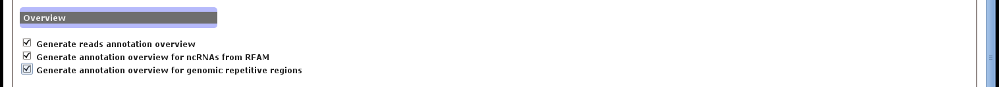

The overview section aims in annotating the reads and classifying them into large families (see the section 5.4.5).
The reads annotation family is the most general view, and annotates the reads based on the following annotations : coding genes, ncRNAs from Rfam, smallRNAs from repeated regions, rRNA, and precursor miRNA from miRBase. Please, note that ncPRO-seq uses the miRBase annotation for miRNAs, and that accordingly, the miRNAs from Rfam are not used.
Then, an overview of the non-coding RNAs annotation and of the repetitive genomic regions are provided.
Figure 3:
ncPRO-seq web interface: reads annotation
|  |
Jocelyn Brayet
2015-02-12